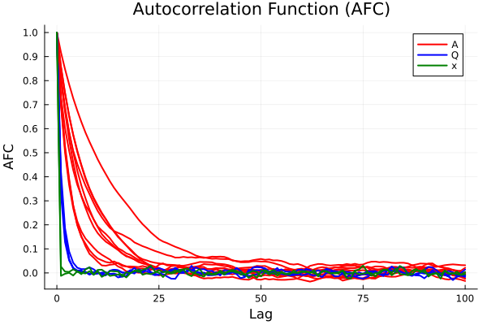

Autocorrelation
This example reproduces the normalized auto-correlation function plot (Figure 1) in Section V-B of the paper.

Assuming knowledge of the basis functions, samples are drawn from the posterior distribution over model parameters and latent state trajectories using the function particle_Gibbs() without thinning. Afterward, the autocorrelation is plotted using the function plot_autocorrelation().
A Julia script that contains all the steps described here can be found at PGopt/Julia/examples/autocorrelation.jl.
The runtime of the script is about 10 minutes on a standard laptop.
Define prior and parameters
First, load packages and initialize.
using PGopt
using LinearAlgebra
using Random
using Distributions
using Printf
using Plots
# Specify seed (for reproducible results).
Random.seed!(82)
# Time PGS algorithm.
sampling_timer = time()Then, specify the parameters of the algorithm.
# Learning parameters
K = 10000 # number of PG samples
k_d = 0 # number of samples to be skipped to decrease correlation (thinning)
K_b = 1000 # length of burn-in period
N = 30 # number of particles of the particle filter
# Number of states, etc.
n_x = 2 # number of states
n_u = 1 # number of control inputs
n_y = 1 # number of outputsDefine the basis functions. The basis functions are assumed to be known in this example. Make sure that phi(x,u) is defined in vectorized form, i.e., phi(zeros(nx, N), zeros(nu, N)) should return a matrix of dimension (n_phi, N).
n_phi = 5 # number of basis functions
phi(x, u) = [0.1 * x[1, :] 0.1 * x[2, :] u[1, :] 0.01 * cos.(3 * x[1, :]) .* x[2, :] 0.1 * sin.(2 * x[2, :]) .* u[1, :]]' # basis functionsSelect the parameters of the inverse Wishart prior for Q.
ell_Q = 10 # degrees of freedom
Lambda_Q = 100 * I(n_x) # scale matrixSelect the parameters of the matrix normal prior (with mean matrix = 0, right covariance matrix = Q (see above), and left covariance matrix = V) for Q.
V = Diagonal(10 * ones(n_phi)) # left covariance matrixProvide an initial guess for the parameters.
Q_init = Lambda_Q # initial Q
A_init = zeros(n_x, n_phi) # initial AChoose the distribution of the initial state. Here, a normally distributed initial state is assumed.
x_init_mean = [2, 2] # mean
x_init_var = 1 * I # variance
x_init_dist = MvNormal(x_init_mean, x_init_var)Define the measurement model. It is assumed to be known (without loss of generality). Make sure that g(x, u) is defined in vectorized form, i.e., g(zeros(nx, N), zeros(nu, N)) should return a matrix of dimension (n_y, N).
g(x, u) = [1 0] * x # observation function
R = 0.1 # variance of zero-mean Gaussian measurement noiseGenerate data
Generate training data.
# Parameters for data generation
T = 2000 # number of steps for training
T_test = 500 # number of steps used for testing (via forward simulation - see below)
T_all = T + T_test
# Unknown system
f_true(x, u) = [0.8 * x[1, :] - 0.5 * x[2, :] + 0.1 * cos.(3 * x[1, :]) .* x[2, :]; 0.4 * x[1, :] + 0.5 * x[2,:] + (ones(size(x, 2)) + 0.3 * sin.(2 * x[2, :])) .* u[1, :]] # true state transition function
Q_true = [0.03 -0.004; -0.004 0.01] # true process noise variance
mvn_v_true = MvNormal(zeros(n_x), Q_true) # true process noise distribution
g_true = g # true measurement function
R_true = R # true measurement noise variance
mvn_e_true = MvNormal(zeros(n_y), R_true) # true measurement noise distribution
# Input trajectory used to generate training and test data
mvn_u_training = Normal(0, 3) # training input distribution
u_training = rand(mvn_u_training, T) # training inputs
u_test = 3 * sin.(2 * pi * (1 / T_test) * (Array(1:T_test) .- 1)) # test inputs
u = reshape([u_training; u_test], 1, T_all) # training + test inputs
# Generate data by forward simulation.
x = Array{Float64}(undef, n_x, T_all + 1) # true latent state trajectory
x[:, 1] = rand(x_init_dist, 1) # random initial state
y = Array{Float64}(undef, n_y, T_all) # output trajectory (measured)
for t in 1:T_all
x[:, t+1] = f_true(x[:, t], u[:, t]) + rand(mvn_v_true, 1)
y[:, t] = g_true(x[:, t], u[:, t]) + rand(mvn_e_true, 1)
end
# Split data into training and test data.
u_training = u[:, 1:T]
x_training = x[:, 1:T+1]
y_training = y[:, 1:T]
u_test = u[:, T+1:end]
x_test = x[:, T+1:end]
y_test = y[:, T+1:end]
Infer model
Run the particle Gibbs sampler to jointly estimate the model parameters and the latent state trajectory.
PG_samples = particle_Gibbs(u_training, y_training, K, K_b, k_d, N, phi, Lambda_Q, ell_Q, Q_init, V, A_init, x_init_dist, g, R)
time_sampling = time() - sampling_timerPlot autocorrelation
Finally, plot the autocorrelation of the obtained samples.
plot_autocorrelation(PG_samples; max_lag=100)